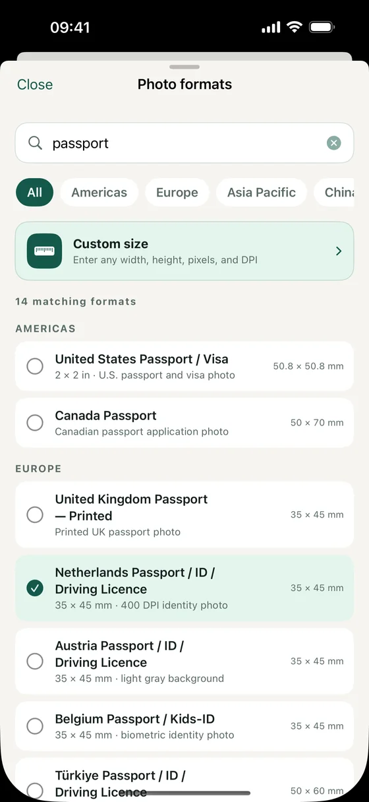

Passport & ID photo maker
Prepare photos for U.S., Canadian and European passport, visa and ID applications. Pick a size, frame your portrait, and export a digital photo or print sheet.
On-device editing · No account or photo uploads
- U.S. passport2 × 2 in
- UK printed passport35 × 45 mm
- Canadian passport50 × 70 mm

Passport and ID photo sizes
IDMint includes searchable references for these formats. Dimensions are the app’s width × height settings. Digital presets are starting points, and each authority sets its own rules for acceptable photos.
| Country or region | Photo type | Size in IDMint | Authority |
|---|---|---|---|
| United States | Passport photo | 2 × 2 in | Official guidance |
| United States | Visa photo | 2 × 2 in | Official guidance |
| Canada | Passport photo | 50 × 70 mm | Official guidance |
| United Kingdom | Printed passport photo | 35 × 45 mm | Official guidance |
| United Kingdom | Online passport photo | 600 × 750 px | Official guidance |
| Ireland | Online passport photo | 715 × 951 px | Official guidance |
| France | Passport & national ID photos | 35 × 45 mm | Official guidance |
| Netherlands | Passport, ID & driving licence photos | 35 × 45 mm | Official guidance |
| Austria | Passport, ID & driving licence photos | 35 × 45 mm | Official guidance |
| Belgium | Passport & Kids-ID photos | 35 × 45 mm | Official guidance |
| Italy | Passport & national ID photos | 35 × 45 mm | Official guidance |
| Spain | Passport & DNI photos | 26 × 32 mm | Official guidance |
| Poland | Passport & national ID photos | 35 × 45 mm | Official guidance |
| Schengen area | Short-stay visa photo | 35 × 45 mm | Official guidance |
Some authorities require a professional photographer or prohibit digital edits, including background replacement. Check the current requirements for your application before using an edited or self-taken photo.
From portrait to print
Choose a format
Search by country, document type or size. Enter millimeters or pixels and a DPI for a custom size you can save.
Frame the portrait
Import a photo or take a new one. Use the crop guide, zoom and on-device checks for framing, pose and photo quality.
Export your photo
Save a JPEG or PNG, set an optional JPEG file-size target, or arrange copies on a 4 × 6 inch print sheet with cut lines.

Common questions
What size is a U.S. passport photo?
The U.S. passport reference in IDMint is 2 × 2 inches (51 × 51 mm when rounded). That creates a 600 × 600 px image at 300 DPI. For online applications, check the separate upload instructions.
Are printed and online UK passport photos the same size?
Printed UK passport photos are 35 × 45 mm. For online passport applications, the UK specifies at least 600 pixels wide by 750 pixels tall. IDMint provides a separate reference for each.
Can I take a Canadian passport photo myself?
Canada generally requires passport photos to be taken in person by a commercial photographer or studio. Check the official instructions. Use IDMint’s size reference to understand the dimensions.
Does IDMint make passports, visas or ID cards?
IDMint prepares the portrait photo you may submit with an application. Issuing authorities make official documents and decide whether submitted photos are accepted.
Does IDMint upload my photos?
Cropping, checks and export run on your iPhone. IDMint does not require an app account or upload your photos to a developer-operated server.
Prepare your next application photo
Photo export requires a monthly subscription or a one-time lifetime purchase.